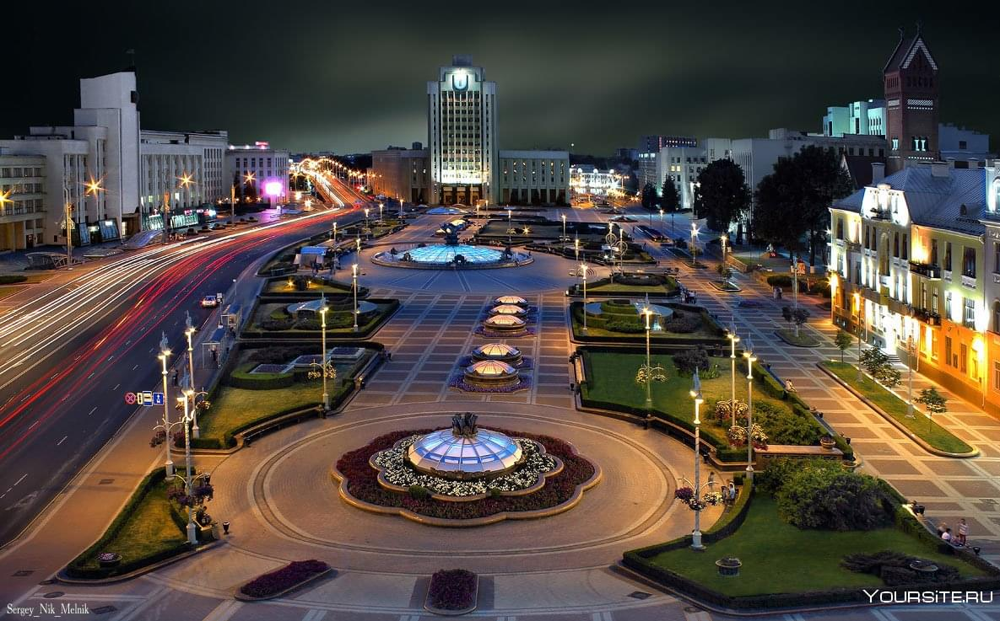
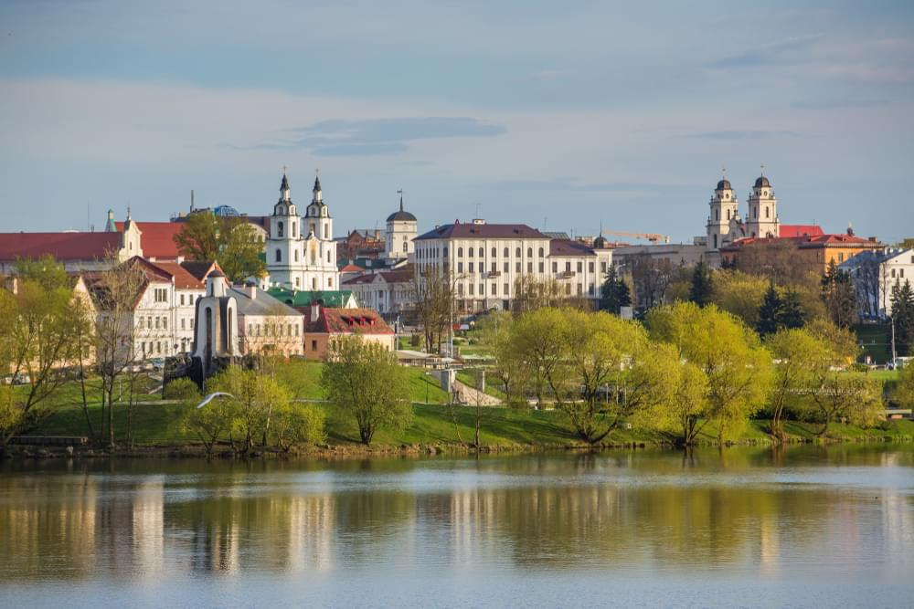
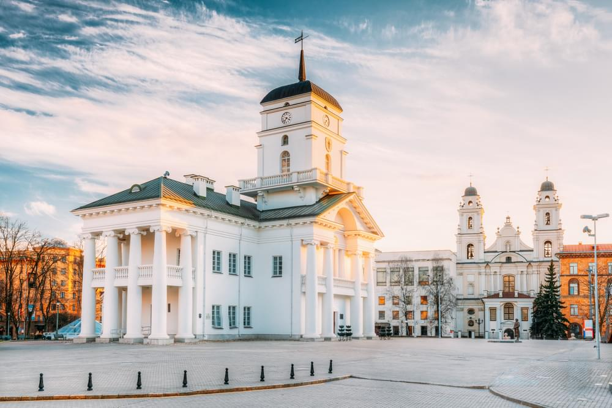
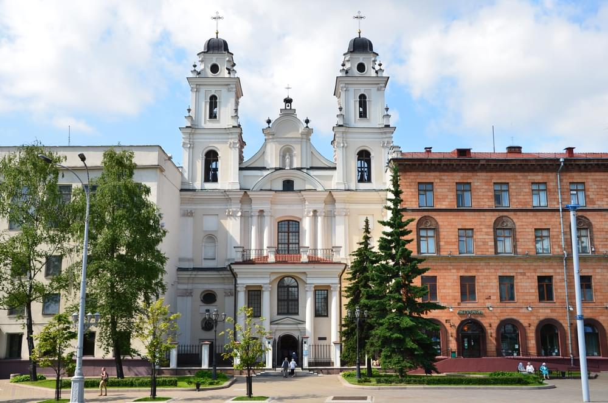
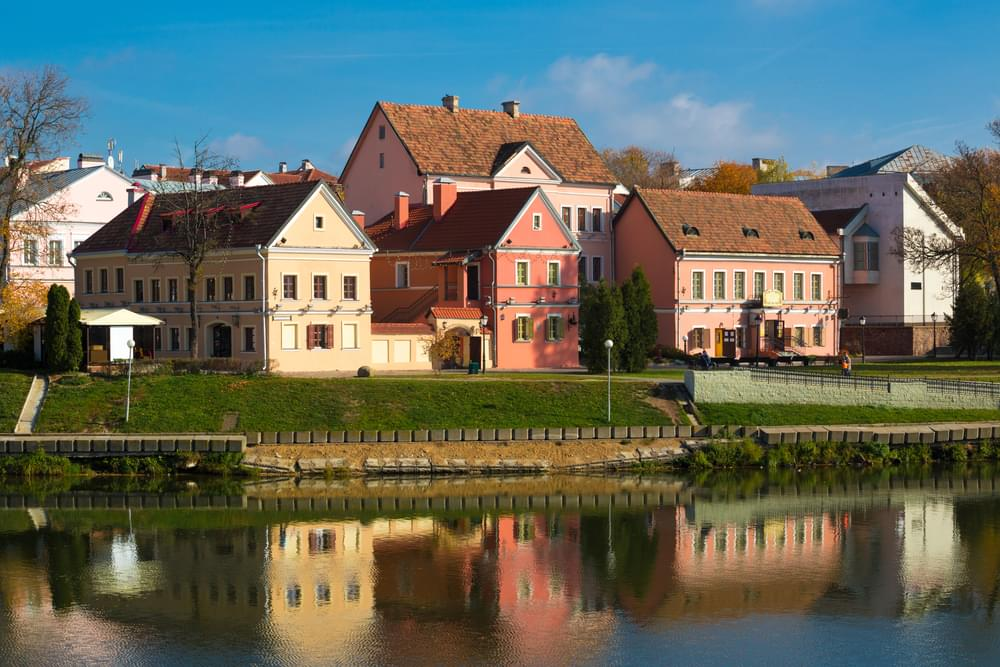

Тур
Минск – удивительный город, и мы предлагаем познакомиться с ним удивительным образом – на ретро-автобусе 30-х годов. Такие колесили по белорусской столице в довоенное и послевоенное время.
Дубовые лавочки, звук переключения скоростей, проплывающие за раздвижными окнами виды… и вот вы уже герои фильма «Стиляги» или «Место встречи изменить нельзя», ведь «Фердинанд» из этого любимого многими фильма и есть ЗИС-8.
Мы проезжаем по самым значимым и интересным местам Минска. Благодаря своим небольшим габаритам, автобус заезжает во многие интересные уголки, недоступные стандартным автобусам, например Осмоловка, Троицкое предместье. На Октябрьской улице мы делаем небольшую остановку, чтобы прогуляться, полюбоваться стрит-артом и сделать фото в ретро-атмосфере фабрик начала 20-го века.
Аудиогид на русском и английском языке познакомит вас с историей города, его интересными местами и легендами, а наш водитель будет рад ответить на все дополнительные вопросы.

Достопримечательности
Верхний город
Верхний город, или Высокий рынок, — исторический центр Минска и одно из любимых мест туристов и жителей города.
Так называется район площади Свободы и соседние улицы. Верхний город начали застраивать в 16 веке как новый
центр Минска, после того как город пострадал от пожаров и набегов крымских татар. Здесь жили богатые горожане, а
сам район был окружен земляным валом.
Сегодня в Верхнем городе можно увидеть хорошо сохранившиеся и отреставрированные здания 16-18 веков: Свято-Духов
собор, бывший костел Святого Иосифа и базилианский монастырь, драматический театр им. М. Горького, Собор
Пресвятой Девы Марии, гостиный двор. Ходят слухи, что под Верхним городом существуют подземные ходы, которые
соединяют главные храмы.
В Верхнем городе лучше всего ощущается европейский дух белорусской столицы. Сюда приходят, чтобы полюбоваться на
старинные здания, посидеть в уютных кафе, послушать уличных музыкантов и купить сувениров. Также отсюда
открывается отличная панорама на окрестности и реку Свислочь.

Минская ратуша
Еще одна достопримечательность площади Свободы — городская ратуша. Ее построили после того, как польский король
и князь Великого княжества Литовского Александр одарил минчан Магдебургским правом. Жалованная грамота позволяла
городу учредить собственный орган самоуправления (магистрат) и возвести для него ратушу. Минчане получили право
на частное владение землей, возможность платить единый налог и создавать ремесленные объединения — цеха.
После присоединения белорусских земель к России Магдебургское право в Минске было отменено. В бывшей ратуше
размещались суд, архив, музыкальная школа и театр. В 1857 году здание снесли. По одним источникам — из-за
обветшалости, по другим — по приказу Николая I, чтобы она не напоминала жителям о прежней свободе.
Новую ратушу возвели в 2003 году на месте и по образу прежнего здания 17 века. На первом этаже сейчас проходят
выставки, посвященные истории ратуши и Магдебургскому праву. Здесь можно увидеть макет исторического центра
Минска в начале 19 века. На втором этаже проводятся совещания и приемы важных гостей.
Башню ратуши украшают герб города и часы. Каждый час куранты отбивают припев из песни про Минск, написанной
почетным гражданином столицы, известным белорусским композитором Игорем Лученком.

Собор Пресвятой Девы Марии
Напротив ратуши, на одной площади с православным Свято-Духовым собором, расположен и главный храм местных
католиков — кафедральный собор Пресвятой Девы Марии. Он возведен в 1700-1710 годах в стиле белорусского барокко
и изначально был церковью иезуитов.
В 1798 году в Беларуси была создана католическая епархия, тогда церковь освятили в честь Святой Девы Марии и
присвоили ей статус католического кафедрального собора. При советской власти Мариинский костел закрыли, обе
башни снесли. Здание превратили в спортивный комплекс: под церковными сводами проходили занятия по тхэквондо.
Только в начале 1990-х храм вернули католической церкви, повторно освятили и полностью восстановили. В собор
стоит зайти, чтобы послушать звучание органа, а также посмотреть на старинные фрески на потолке, найденные в
ходе реставрации.

Троицкое предместье
В центре Минска, на левом берегу реки Свислочь, находится небольшой живописный район — Троицкое предместье, или
Троицкая гора. В средние века на территории предместья находился старый город Минска с торговой площадью. Многие
здания были снесены в советское время. Восстановили их уже во второй половине 20 века. В 2004 году западная
часть Троицкого предместья получила охранный статус. Среди старинных зданий сохранились дом Вигдорчика, дом
Пинсуховича, фабрика Цитвера и другие.
Сейчас Троицкое предместье — популярное туристическое место и приятное место для прогулок. Здесь расположено
несколько музеев: музей белорусской литературы, Гостиная Владислава Голубка, литературный музей Максима
Богдановича. Также работают арт-галереи, выставочный центр «БелЭкспо», загс, рестораны и кафе, сувенирные лавки.
Туристы и минчане любят бывать в Троицком предместье, любоваться достопримечательностями и устраивать
фотосессии.
